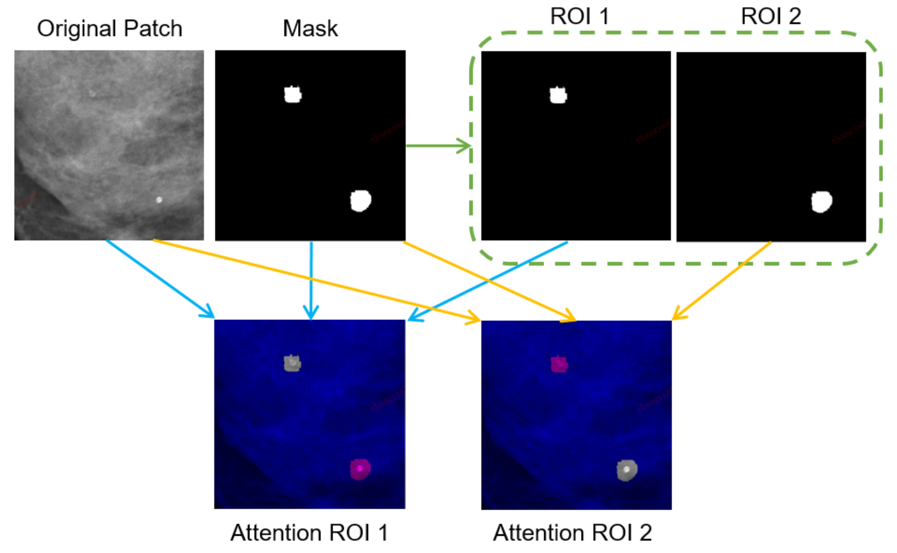
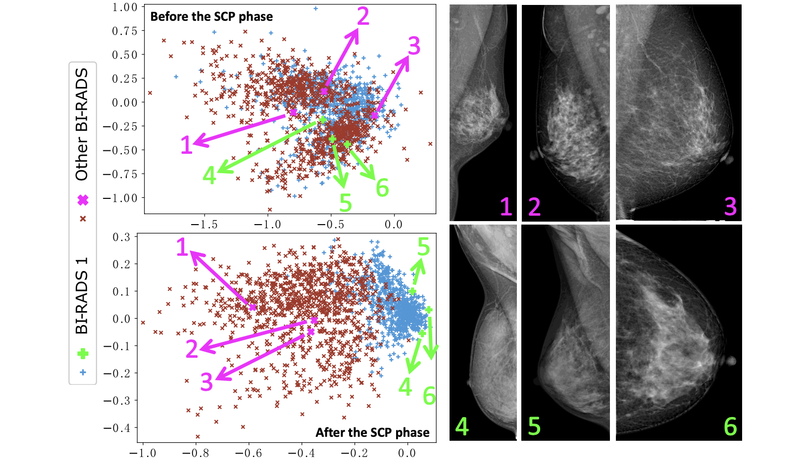

|
Yuxing Tang
Email : tangyuxing87 [AT] gmail [DOT] com
|
| CV | Google Scholar |
|
Yuxing Tang is currently a senior research scientist at PAII Inc., USA. Before that, he was a postdoctoral visiting fellow at the National Institutes of Health (NIH). He received the Ph.D. degree in Computer Science at Ecole Centrale de Lyon, France in 2016. He completed his bachelor and master degree in Beijing Jiaotong University, China. His research focuses on computer vision, deep learning, and their applications in medical imaging, computer-aided diagnosis, and weakly supervised object/lesion detection.
|
News
- [July 2021] Two scientific abstracts including one oral presentation are accepted at RSNA 2021.
- [June 2021] Our work on multi-view mass detection/segmentation in mammograms has been accepted for publication in Medical Image Analysis. Paper will be available soon.
- [May 2021] Two co-authored papers are accepted at MICCAI 2021. Congratulations Yanbo and Zhenjie!
- [Mar. 2021] A first-authored paper on semi-supervised mass detection in mammograms is accepted at CVPR 2021.
---Show more---
- [Dec. 2020] Our work on universal lesion detection in CT has been accepted for publication in IEEE TMI. Congratulations to Ke!
- [Nov. 2020] Yet another work on few-shot learning in chest X-rays has been accepted for publication in Medical Image Analysis. Congratulations to Angshuman!
- [Oct. 2020] Our work on disease decomposition in chest X-rays has been accepted for publication in Medical Image Analysis. Congratulations to Youbao!
- [June 2020] Left the NIH and will be joining PAII Inc. as a senior research scientist.
- [June 2020] Received the Outstanding Reviewer Award at CVPR 2020.
|
|
|
MommiNet-v2: Mammographic multi-view mass identification networks
Zhicheng Yang, Zhenjie Cao, Yanbo Zhang, Yuxing Tang, Xiaohui Lin, Rushan Ouyang, Mingxiang Wu, Mei Han, Jing Xiao, Lingyun Huang, Shibin Wu, Peng Chang, Jie Ma
Medical Image Analysis (MedIA), 2021.
| To appear soon. |
MommiNet-v2 aggregates information from the high-resolution representations of all mammographic views and incorporates the malignancy information from both biopsy and BI-RADS categories.
|
|
|
Automated abnormality classification of chest radiographs using deep convolutional neural networks
Yu-Xing Tang, You-Bao Tang, Yifan Peng, Ke Yan, Mohammadhadi Bagheri, Bernadette A. Redd, Catherine J. Brandon, Zhiyong Lu, Mei Han, Jing Xiao, Ronald M. Summers
npj Digital Medicine, Nature Publishing Group, 2020.
| BibTeX
| Code | Model
| Data | Media |
AI algorithms can distinguish normal and abnormal chest X-rays with accuracy comparable to that of experienced radiologists, allowing these studies to be triaged for priority review.
|
|
|
Learning from multiple datasets with heterogeneous and partial labels for universal lesion detection in CT
Ke Yan, Jinzheng Cai, Youjing Zheng, Adam P. Harrison, Dakai Jin, Youbao Tang, Yuxing Tang, Lingyun Huang, Jing Xiao, Le Lu
IEEE Transactions on Medical Imaging (TMI), 2020.
| BibTeX | arXiv | Data |
LENS (Lesion ENSemble) is a universal lesion detection framework that can effectively learn with multiple heterogeneous datasets and mine missing annotations from partially-labeled datasets.
|
|
|
Leveraging large-scale weakly labeled data for semi-supervised mass detection in mammograms
Yuxing Tang, Zhenjie Cao, Yanbo Zhang, Zhicheng Yang, Zongcheng Ji, Yiwei Wang, Mei Han, Jie Ma, Jing Xiao, Peng Chang
IEEE/CVF Conference on Computer Vision and Pattern Recognition (CVPR), 2021.
| BibTeX | Supp |
A novel self-training framework for semi-supervised mass detection with soft image-level labels generated from diagnosis reports by a RoBERTa-based NLP model.
|
|

|
BI-RADS classification of calcification on mammograms
Yanbo Zhang, Yuxing Tang, Zhenjie Cao, Mei Han, Jing Xiao, Jie Ma, Peng Chang
International Conference on Medical Image Computing and Computer Assisted Intervention (MICCAI), 2021.
| BibTeX |
A deep learning-based BI-RADS classification for individual calcification in mammograms. A new evaluation metric for BI-RADS classification which considers the severity of malignancy.
|
|

|
Supervised contrastive pre-training for mammographic triage screening models
Zhenjie Cao, Zhicheng Yang, Yuxing Tang, Yanbo Zhang, Mei Han, Jing Xiao, Jie Ma, Peng Chang
International Conference on Medical Image Computing and Computer Assisted Intervention (MICCAI), 2021.
| BibTeX |
A framework of supervised contrastive pre-training followed by supervised fine-tuning to improve mammographic triage screening models.
|
Awards
- CVPR Outstanding Reviewer Award, 2020
- RSNA Trainee Research Prize, 2019
- ISBI Travel Award, 2019
- IAPR Outstanding Reviewer Award, 2018
- CVPR Doctoral Consortium Travel Grant, 2016
|
| Services
| Journal reviews
IEEE TIP / TNNLS / TMI / TMM / TCSVT / JBHI / TBD / Access
Elsevier MedIA/ PR / PRL / NEUCOM
Nature Publication Group npj Digital Medicine / Scientific Reports
RSNA Radiology / Radiology: AI / Cardiothoracic Imaging
IET Computer Vision / Signal Processing / Image Processing / Electronics Letters
MDPI Sensors / Remote Sensing / Applied Sciences / Algorithms
SPIE Journal of Electronic Imaging
Medical Physics, PLOS ONE
| Conference reviews or technical/program committee
CVPR 2018/2019/2020/2021, ICCV 2019, MICCAI 2018/2019, AAAI 2020, ECCV 2020, ACCV 2018, ICHI 2019, PRCV 2019
|
|